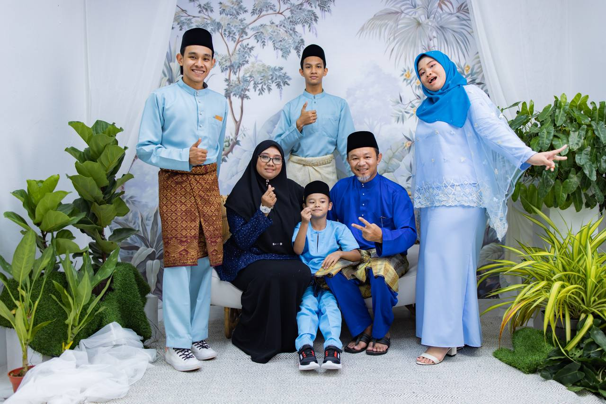
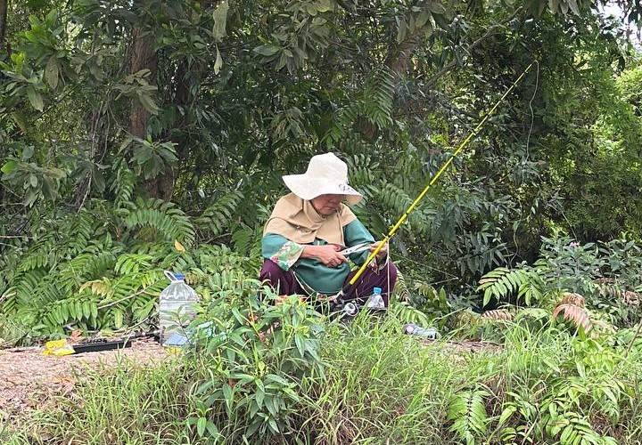

Home
In the warm embrace of my happy little family, I find solace and unconditional love that resonates deeply within my heart. As the first child among four siblings, my role as the first brother brings with it a unique set of challenges and responsibilities, intricately woven into the tapestry of our family dynamics. Being the elder sibling means navigating uncharted territories, where the weight of responsibility is both a privilege and a daunting journey. With each passing day, I strive to create a nurturing environment that fosters growth, understanding, and a sense of camaraderie among my siblings. The bond we share goes beyond mere familial ties; it is a connection forged through shared laughter, occasional disagreements, and the unspoken support that binds us together. As the Sulong brother, I often find myself walking a fine line between being a role model and a friend. The responsibility to set a positive example for my younger siblings is a constant reminder that my actions and choices reverberate within the walls of our home. It's a role I embrace wholeheartedly, understanding that the experiences I create for my siblings today will shape their perspectives and memories for years to come. Navigating the intricacies of sibling relationships requires patience, empathy, and a willingness to understand each individual's unique personality and needs. I've come to realize that being the Sulong brother is not just about guiding my siblings but also about learning from them. Each one brings a distinct flavor to our family dynamic, adding richness and diversity to our shared experiences. The journey of being the firstborn is filled with moments of joy, pride, and, at times, the challenge of striking a balance between being a protective elder and allowing room for personal growth. It's a delicate dance, one that requires constant adaptation to the ever-evolving needs of my siblings. Yet, in the midst of it all, there is a profound sense of fulfillment derived from witnessing their achievements, big or small, and knowing that I played a part in nurturing their potential. Our family is a tapestry woven with threads of love, understanding, and shared dreams. I cherish the moments we spend together—whether it's celebrating milestones, weathering storms, or simply enjoying the simplicity of everyday life. As the Sulong brother, I am not just a pillar of support; I am an integral part of this beautiful mosaic we call family, and I wouldn't have it any other way.
My Lovely Grandmother
In the embrace of my beloved grandmother, I find myself as the sole remaining link to a cherished past. As her first grandchild, I am frequently beckoned into a world of shared experiences, where the open road becomes our canvas for adventures. With a car license in hand and the rest of the family absorbed in their professional obligations, I become her dedicated companion, especially drawn to the tranquil ritual of fishing she holds dear. Each homecoming is an invitation to cast our lines into the waters, and the joy of the catch transforms into a sizzling feast in our kitchen, fostering a bond that transcends generations. Beyond the idyllic scenes by the water, my grandmother imparts a wealth of knowledge, unveiling the intricacies of life. From sewing clothes with meticulous care to nurturing trees from seed to fruition, her teachings are a tapestry of practical skills and profound life lessons. In the gentle cadence of our time together, I cultivate a deep appreciation for her wisdom and love, etching a profound gratitude for the grandmother who has shaped not only my understanding of fishing and practical skills but also my profound appreciation for the beauty of familial ties. I love my grandmother dearly, and with each shared moment, our connection weaves a narrative that echoes through the core of my being.